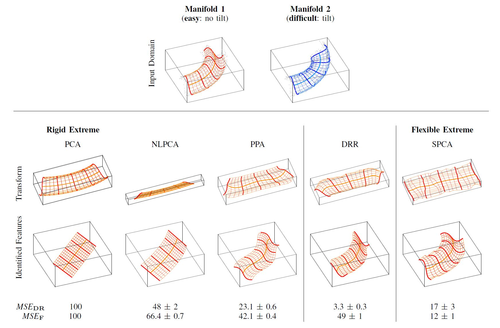
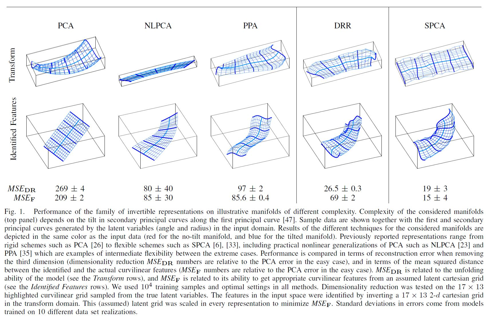

V. Laparra, J. Malo and G. Camps
Toolbox
 and IEEE J. Sel. Topics Sig. Proc. 2015 paper
and IEEE J. Sel. Topics Sig. Proc. 2015 paper Abstract
This paper introduces a new unsupervised method
for dimensionality reduction via regression (DRR). The algorithm
belongs to the family of invertible transforms that generalize
Principal Component Analysis (PCA) by using curvilinear instead
of linear features.. DRR identifies the nonlinear features through
multivariate regression to ensure the reduction in redundancy
between the PCA coefficients, the reduction of the variance of the
scores, and the reduction in the reconstruction error. More
importantly, unlike other nonlinear dimensionality reduction methods,
the invertibility, volume-preservation, and straightforward
out-of-sample extension, makes DRR interpretable and easy to apply.
Properties of DRR enables learning a broader class of data manifolds
than recently proposed Non-linear Principal Components
Analysis (NLPCA) and Principal Polynomial Analysis (PPA). The figure
below illustrates the behavior of different algorithms in this family:
from the rigid (linear) PCA to the flexible Sequential Principal Curves
Analysis (SPCA). In the paper, we
illustrate the performance of the representation in reducing the
dimensionality of hyperspectral images. In particular, we tackle
two common problems: processing very high dimensional spectral
information such as in image sounding data,
and dealing with spatial-spectral image patches of multispectral
images. Both settings pose collinearity and ill-determination
problems. Evaluation of the expressive power of the features is
assessed in terms of truncation error, estimating atmospheric
variables, and surface land cover classification error. Results
show that DRR outperforms linear PCA and recently proposed
invertible extensions based on neural networks (NLPCA) and
univariate regressions (PPA).   The DRR Paper Dimensionality Reduction via Regression in Hyperspectral Imagery  V. Laparra, J. Malo, G. Camps-Valls IEEE J. Selected Topics in Signal Processing 9(9). Sept. 2015 Related Papers (related techniques, PPA, SPCA, NL-ICA and NL-PCA) Principal Polynomial Analysis (PPA) V. Laparra, S. Jiménez, D. Tuia, G. Camps-Valls and J. Malo Int. J. Neural Syst. 24(7). Nov. 2014 Visual Aftereffects and Sensory Nonlinearities from a single Statistical Framework (SPCA). V. Laparra and J. Malo Frontiers in Human Neuroscience. Special issue on Perceptual Illusions. 2015 Nonlinearities and Adaptation of Color Vision from Sequential Principal Curves Analysis V. Laparra, S. Jiménez, G. Camps-Valls and J. Malo Neural Computation 24(10): 2751-2788 Oct. 2012 V1 Nonlinearities emerge from local-to-global Nonlinear ICA .gif) J. Malo and J. Gutiérrez Network: Comput. in Neural Syst. 17(1): 85-102 2006 Non-Linear Principal Components Analysis Scholz, M. Fraunholz, and J. Selbig, (NL-PCA) in Neural Networks Models and Applications. Springer, 2007, ch. 2, pp. 44–67 | |
Download Code |
|